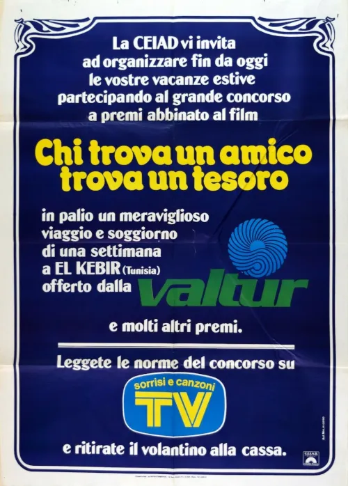

1981 · 6 tracce
Musiche di Carmelo e Michelangelo La Bionda.
Colonna sonora integrale non reperita: sono elencati i brani identificati nelle fonti e le pubblicazioni associate. Restano possibili inserti, riprese strumentali e musiche non pubblicate.
Gli elenchi documentano le edizioni pubblicate; la presenza di ciascuna traccia nel montaggio del film non è certificata.
Brani e ascolti
- 01
Movin’ Cruisin’
3:14Traccia della colonna sonora.
- 02
Sunshine
4:02Traccia pubblicata della colonna sonora.
- 03
Corbucci’s Island
3:28Tema strumentale pubblicato.
- 04
Corbucci's Island (Long)
5:46Versione lunga pubblicata; presenza di questo take nel film non verificata.
- 05
Café
6:33D. D. Sound; il pirata lo ascolta attraverso le cuffie. La durata della pubblicazione può differire dal montaggio del film.
- 06
Where Do the Children Play
Video non identificato · collegamento a una ricerca · Traccia dell’LP associato al film; presenza nel montaggio non verificata.
Fonti e riferimenti
- Scheda del film e creditiConsultata il 3 ottobre 2026.
- Scheda brano: Movin’ Cruisin’Consultata il 3 ottobre 2026.
- Scheda brano: SunshineConsultata il 3 ottobre 2026.
- Scheda brano: CaféConsultata il 3 ottobre 2026.
- Scheda brano: Where Do the Children PlayConsultata il 3 ottobre 2026.
- Locandina — Chi trova un amico trova un tesoroConsultata il 3 ottobre 2026.
- Edizione / metadati del brano: Corbucci's Island (Long)Consultata il 3 ottobre 2026.
- Edizione / metadati del brano: CaféConsultata il 3 ottobre 2026.